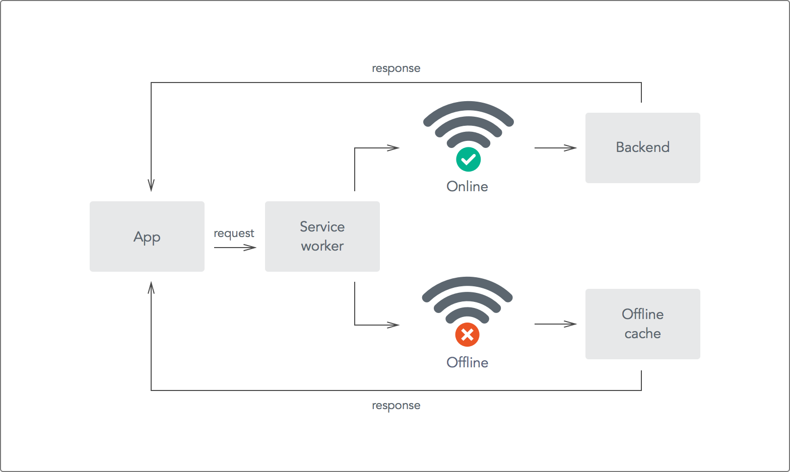
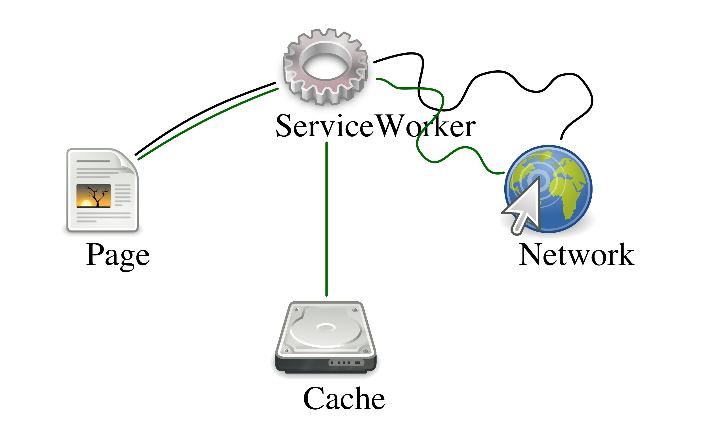

Service Worker
Service workers essentially act as proxy servers that sit between web applications, and the browser and network (when available). They are intended to (amongst other things) enable the creation of effective offline experiences, intercepting network requests and taking appropriate action based on whether the network is available and updated assets reside on the server. They will also allow access to push notifications and background sync APIs.
 
Service Worker Life Cycle
To install a service worker for your site, you need to register it, which you do in your page's JavaScript. Registering a service worker will cause the browser to start the service worker install step in the background.
Typically during the install step, you'll want to cache some static assets. If all the files are cached successfully, then the service worker becomes installed. If any of the files fail to download and cache, then the install step will fail and the service worker won't activate (i.e. won't be installed). If that happens, don't worry, it'll try again next time. But that means if it does install, you know you've got those static assets in the cache.
When we're installed, the activation step will follow and this is a great opportunity for handling any management of old caches, which we'll cover during the service worker update section.
After the activation step, the service worker will control all pages that fall under its scope, though the page that registered the service worker for the first time won't be controlled until it's loaded again. Once a service worker is in control, it will be in one of two states: either the service worker will be terminated to save memory, or it will handle fetch and message events that occur when a network request or message is made from your page.


Caching Strategy (Cache then Network)
Making the requests:
The app needs to kick off two asynchronous requests, one to the cache and one to the network. The app uses the caches object available in window to access the cache and retrieve the latest data. This is an excellent example of progressive enhancement as the caches object may not be available in all browsers, and if it's not the network request should still work.
To do this, we need to:
- Check if the caches object is available in the global window object.
- Request data from the cache.
- If the server request is still outstanding, update the app with the cached data.
- Request data from the server.
- Save the data for quick access later.
- Update the app with the fresh data from the server.